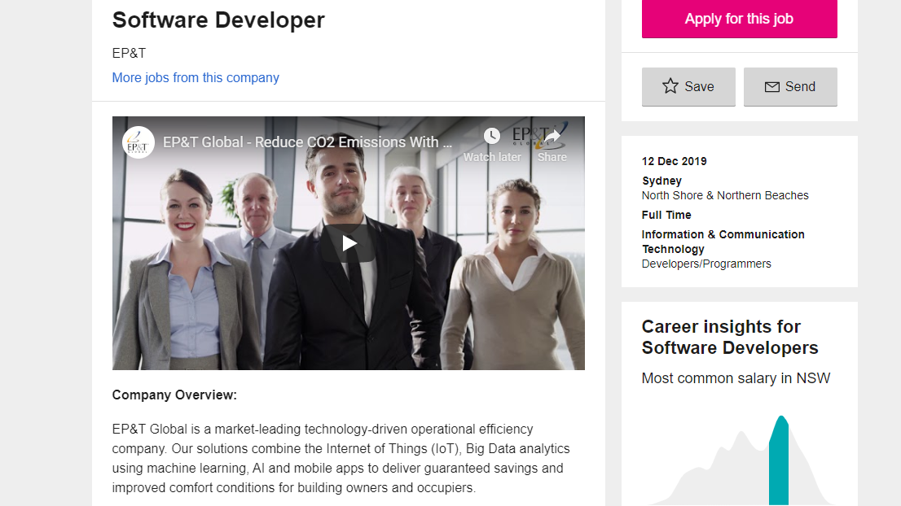

Name: Mya Myintzu Thant
Student Number: s3819438
Email Address: s3819438@student.rmit.edu.au
Nationality: Myanmar
Education: Taylors College
(Foundation) Taylors College Sydney
IGCSE O Level
IELTS
(Territory Education) Grade 10 ILBC
Languages: Myanmar and English
Hobbies: I enjoy reading Manga, watching movies and playing Video games.
Recently I’ve bought a plant and has been taking care of it daily.
Advertisement
Software Developer

The position would allow me work globally meeting new individuals and work
alongside them. It will be a great learning experience and I will be able to
increase the range of my network. This makes the job appealing.
To gain this position I would need to be well versed in various programming
languages, being able to communicate well with people around the world and a
dedicated work ethic to meet the requirements of eac job.
Right now I am sadly not well versed in the programming language and I can only
communicate well in my native language. Therefore it is important for me to
learn the programming language and work on my communication skills.
Currently enrolled in RMIT courses I intend to learn the programming language
and other things needed of me to be in any IT profession.
Reference: EP&T, 2019, ‘Software Developer’, viewed 12 December 2019, Seek, https://www.seek.com.au/job/40572319?type=standard#searchRequestToken=5c1467d3-c9c4-450e-92e1-156751b488d6.
Overview
I would like to create a mobile app that calculates how much calories
ingredients have and contain a self updating library of recipes .
It would be convenient app for people who are watching their diets, are
working towards a healthy life or preparing for a physical event. Due to it
being a mobile app it can be used on the go where people can calculate their
daily caloric intake when eating at home or outside. The app's purpose is for
the user to be able to plan their diets for weeks in advance and when it’s
best to have cheat days.
Motivation
There are a large number of mobile apps in the mobile market each with their
own purpose. However, the ones that are most well known have nothing to do
with calculating calories and cooking. Recently I have been into cooking and
planning my own diet but the apps I have found did not offer all the features
I want, so I had to use multiple apps. So one of the key motivations was to
make my own app where I can add in all the features I want. In the 21st
century health is a good trend so I believe there will be a good market
for my app.
Description
The app will first have an index of ingredients with an estimated calorie
count and be able to help the user calculate the total amount of calories for
each meal. This will be one of its key features allowing the app to be
flexible, if the user wants to cook something and is not following a recipe.
They can just enter a list of ingredients and how they intend to cook them
into the app such as pan fry with oil, oven bake or boil. I am hopeful this
will help people like myself who are busy most of the time so at times when
we cook tend to just use available ingredients in the fridge to put together
a makeshift meal. This feature will however be difficult to implement if the
users are using leftovers from another meal but an estimate can be calculated.
In addition to this feature, I wish to add in a library or recipes that can be
customised to suit the tastes and needs of each individual customer. This can
be accomplished by using an algorithm to monitor the users go to ingredients
and recipes then using the information gathered to allow the app to make
suggestions on it’s own. Another option is to allow the users to go through
an optional survey which will help them customise their own dietary options.
Due to how the average consumer has a minimal attention span when using mobile
apps, it is best to leave the survey as optional.
Tools and Technologies
At first I think would need to create a graphic template, design then using
Xcode and Swift. As it is a mobile app I would need to use the app store as
the platform to sell it. Utilizing the computer at home, I believe it will be
enough to create a simple prototype of the app and open source tools such as
Eclipse the tool that I am learning to use in another unit at RMIT. A hard
drive or online server to contain all the data on the project will be a
necessary investment containing backup files in case of emergencies.
Skills Required
Firstly I would need Cross platform development skills as I would need the
knowledge to alter the app to work on iOS, Android and Blackberry to reach a
larger audience. UX/UI development skills are needed to make sure the app
appears appealing to customers. A firm grasp on in modern programing language
such as HTML5 and Java is a necessity and thankfully RMIT teaches their
students these languages. A degree in computer science or something similar
would help in convincing people that the app was made by a professional and
as a student at RMIT I would eventually get one when I graduate.
Outcome
I want this app to have an impact on the health concerned and food mobile app
users and to generate a follower base. Then generate additional revenue ask
to receive sponsorship from some companies such as Blue apron who deliver
food and instructions on how to cook them. This is my first app, so it is
bound to have faults and mistakes so the best thing I can hope for is for it
be well received and then get feedback which I can then use to improve the
app itself and as a learning step in my future projects.